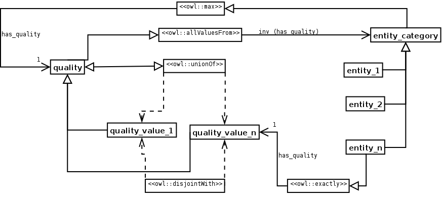
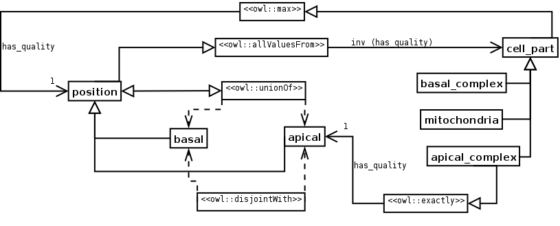

NAME: Entity-Quality.
CLASSIFICATION: Good Practice.
MOTIVATION: Qualities (modifiers) are refining entities, thus refine or modify the description of another (independent) entity. They are very important in many domains. They should not be confused with selectors (e.g. left hand), although both modifiers (e.g.) and selectors are refining entities.
AIM: To model qualities of independent entities (e.g. position, colour, ...).
STRUCTURE:
SAMPLE:
ELEMENTS: The core of this ODP is formed by the qualities, placed in a single hierarchy (the qualities are disjoint and the superclass is covered by them, like in the Value Partition ODP). Entities are linked to qualities by an object property, and a QCR (Qualifed Cardinality Restriction) is used to express wether the quality is intrisic (EXACTLY 1) or accidental (MAX 1). Also, qualities are limited to the entities to which they apply by an universal restriction (e.g. plasma membrane can not be positive or negative regulator of a concrete process)..
IMPLEMENTATION: The first step is to create the qualities hierarchy, in the same way as the Value Partition ODP. Create the object property to link entities to qualities. Add the restriction Quality_category inv (has_quality) only entity (this restricts the qualities to the entity). Add the restriction entity_category has_quality max|exactly 1 quality category (this restricts the entities to the qualities, max 1 in the case of accidental qualities and exactly 1 in the case of intrinsic qualities).
RESULT: The entities and the qualities of those entities are properly separated, and which qualities apply to which entities is also expressed.
SIDE EFFECTS: it is very difficult to add sub-qualities. Can't handle multi-aspect qualities.
ADDITIONAL INFORMATION: See also Entity-Feature-Value and Entity-Property-Value.
REFERENCES:
URL: http://odps.sourceforge.net/odp/owl/Good_Practice_ODP/Optionality.owl